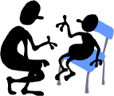

<html xmlns:mso="urn:schemas-microsoft-com:office:office" xmlns:msdt="uuid:C2F41010-65B3-11d1-A29F-00AA00C14882">


<!-- Mirrored from sfhelp.org/sf/co/sp_sc.htm by HTTrack Website Copier/3.x [XR&CO'2014], Tue, 23 Apr 2019 19:13:46 GMT -->
<head>
<title>The REAL causes of stepchild-steparent relationship problems</title>
<meta name="robots" content="all">
<meta name="author" content="Peter K. Gerlach, MSW">
<meta http-equiv="Content-Type" content="text/html; charset=windows-1252">
<meta http-equiv="Content-Language" content="en-us">
<meta name="description" content="The REAL causes of stepchild-steparent relationship problems">
<meta name="keywords" content="stepfamily, blended family, co-parent, stepparent, stepmother, stepfather, stepson, stepdaughter, stepchild, relationship, conflict, problem, disinterest, dislike, distrust, disrespect, sarcasm, strss, stressful, reject, rejection, anger, hostile, hostility, resent, resentment, frustration, loyalty, values, conflict, options, solve, resolve, improve, Peter Gerlach ">

<!--[if gte mso 9]><xml>
<mso:CustomDocumentProperties>
<mso:Categories msdt:dt="string">example;parenting;relationships;stepfamily;worksheet</mso:Categories><mso:Approval_x0020_Level msdt:dt="string"></mso:Approval_x0020_Level><mso:Assigned_x0020_To msdt:dt="string"></mso:Assigned_x0020_To></mso:CustomDocumentProperties></xml>
<![endif]-->
<script language="javascript"></script>
<style type="text/css" name="J-BotStyle" ID="J-BotStyle" >
<!--
.Popup		{}
a { text-decoration: none; }.Popup		{}
.popup       {  }
.Popup		{}
.Popup		{}
.popup       {  }
.Popup		{}
 -->
</style>
<base target="_blank">
</head>

<body bgcolor="#D1D1D1">

<div align="center">
  <center>
  <div align="center">
	<table border="0" style="border-collapse: collapse" width="770" id="table2" bgcolor="#FFFFFF">
		<tr>
			<td>

<div align="center">
  <center>
  &nbsp;<table border="0" cellpadding="0" style="border-collapse: collapse" id="table3" height="195" width="422">
    <tr>
      <td width="422" align="center" height="38" colspan="2">
		<!--webbot bot="FLOATWIN" WIP="yes" startspan Preview="" s-wudll="popup.dll" i-bordersize="0" u-imageurl="../../art/hdr-cycle.gif" clientside s-windowname="cycle" i-type="2" b-center="1" tag="p" s-imagealt="" i-rotate="0" s-class="floatwin" u-windowurl="../../pop/cycle.htm" i-top="0" i-width="460" b-resizable="1" i-height="540" i-left="0" -->

<script language=javascript><!--
// Webs Unlimited's J-BOTS FrontPage 2004 JavaScript Generator version 4.0
// Copyright Webs Unlimited 1998, 1999, 2000, 2001, 2002, 2003, 2004 All rights reserved - http://WebsUnlimited.com
cycle_handle = new Object;
cycle_ID = 0;

function cycle(page,w,h,t,l) {
if(parseInt(navigator.appVersion) >= 4){
  	l = (screen.width - w) / 2;
  	t = (screen.height - h) / 2;
  }
  var loc = 'width=' + w + ',height=' + h + ',top=' + t + ',left=' + l;
  cycle_handle = window.open(page,"cycle",",,,,,,resizable," + loc);
if(parseInt(navigator.appVersion) >= 4){cycle_handle.window.focus();}
}
//--></script><a class="Popup" href="../../pop/cycle.html" onclick="cycle(this.href,460,540,0,0); return false;" ></a><!--webbot bot="FLOATWIN" endspan --></td>
    </tr>
    <tr>
      <td width="422" align="center" bgcolor="#CCFFFF" height="44" colspan="2">
      <p align="center"><i><font face="Arial" style="font-size: 11pt"><b><!--webbot bot="FLOATWIN" WIP="yes" startspan Preview="<a class=&quot;Popup&quot; href=#>Lesson 7 of 7 </a>" s-wudll="popup.dll" i-bordersize="0" s-windowname="course" i-type="1" b-center="1" tag="p" i-rotate="0" s-class="floatwin" u-windowurl="../../pop/course.htm" clientside i-top="0" i-width="490" b-resizable="1" i-height="490" i-left="0" s-hyperlink="Lesson 7 of 7 " -->

<script language=javascript><!--
// Webs Unlimited's J-BOTS FrontPage 2004 JavaScript Generator version 4.0
// Copyright Webs Unlimited 1998, 1999, 2000, 2001, 2002, 2003, 2004 All rights reserved - http://WebsUnlimited.com
course_handle = new Object;
course_ID = 0;

function course(page,w,h,t,l) {
if(parseInt(navigator.appVersion) >= 4){
  	l = (screen.width - w) / 2;
  	t = (screen.height - h) / 2;
  }
  var loc = 'width=' + w + ',height=' + h + ',top=' + t + ',left=' + l;
  course_handle = window.open(page,"course",",,,,,,resizable," + loc);
if(parseInt(navigator.appVersion) >= 4){course_handle.window.focus();}
}
//--></script><a class="Popup" href="../../pop/course.html" onclick="course(this.href,490,490,0,0); return false;" >Lesson 7 of 7 </a><!--webbot bot="FLOATWIN" endspan -->
		</b>- evolve a high-nurturance stepfamily</font></i></td>
    </tr>
    <tr>
      <td width="166" align="center" height="99">

</td>
      <td width="256" align="center" height="99">

<p style="margin-top: 9px; margin-bottom: 0">

<font face="Arial">

<b>
Stepparent - Stepchild <span style="background-color: #FEFFE1"><br>
Relationship Problems</span></b></font></font></p>
<p align="center">
<font face="Arial" style="font-size: 11pt">By Peter K. 
		<a style="text-decoration: underline" href="../../site/pkg.html">Gerlach</a>, MSW<br>
</font>
<font face="Arial" style="font-size: 6pt"><br>
</font>
<font face="Arial" style="font-size: 11pt">Member
<a title="National Stepfamily Resource Center" href="http://stepfamilies.info/about.php">
<u>NSRC Experts Council</u></a></font></td>
    </tr>
  </table>
  </center>
</div>

<p align="center"><font face="Arial" size="2">
</font></p>
<blockquote>
  <ul>
	<li>
	<p align="left">
	<font face="Arial" 
    style="font-style: italic; font-size:11pt"><a href="../../site/intro.html">
	<u>site intro </u></a>&gt; 
		<a href="../../site/course.html"><u>course outline</u></a> &gt;
		<a href="../guide7.html"><u>Lesson 7</u> </a>tasks or 
		<a href="../links7.html"><u>links</u></a>, site 
	<a href="../../site/search.html"><u>search</u></a>,
		<a href="https://www.facebook.com/groups/846121198782230/"><u>chat</u></a>, 
		or
    	<a href="javascript:history.back(1)"><u>prior page</u></a> &gt; here</font></li>
	</ul>

<blockquote>

	<p align="center"><font face="Arial" size="2">
	 </font>
	<font face="Arial" style="font-size: 11pt">
	The Web address of this article is 
	<u>http://sfhelp.org/sf/co/sp_sc.htm</u></font></p>
	<p align="center"><font face="Arial" style="font-size: 11pt">Updated&nbsp;
	07/25/15</font></p>
	<p align="left"><font face="Arial" style="font-size: 11pt" size="2">&nbsp;&nbsp;&nbsp;&nbsp;&nbsp; 
		<span style="background-color: #FFFFCC">Clicking <u>underlined links</u> here will open a 
		new window</span>. Other links will open&nbsp; an informational popup, 
		so please turn off your 
		browser's popup blocker or allow popups from this nonprofit Web site.
		If your playback device doesn't support Javascript, the popups may not display.
		<span style="background-color: #FFFF99">Follow underlined links <i>after</i> 
		finishing this article</span> to avoid getting lost.</font></p>
	<p align="left"><font face="Arial" style="font-size: 11pt">&nbsp;&nbsp;&nbsp;&nbsp;&nbsp;
	<b>This is one of a series of Lesson-7 articles </b>
	on how<b> </b>to<b> </b>evolve a <!--webbot bot="FLOATWIN" WIP="yes" startspan Preview="<a class=&quot;Popup&quot; href=#>high-nurturance </a>" s-wudll="popup.dll" i-bordersize="0" s-windowname="nurt" i-type="1" b-center="1" tag="p" i-rotate="0" s-class="floatwin" u-windowurl="../../fam/pop/nurture.htm" clientside i-top="0" i-width="440" b-resizable="1" i-height="360" i-left="0" s-hyperlink="high-nurturance " -->

<script language=javascript><!--
// Webs Unlimited's J-BOTS FrontPage 2004 JavaScript Generator version 4.0
// Copyright Webs Unlimited 1998, 1999, 2000, 2001, 2002, 2003, 2004 All rights reserved - http://WebsUnlimited.com
nurt_handle = new Object;
nurt_ID = 0;

function nurt(page,w,h,t,l) {
if(parseInt(navigator.appVersion) >= 4){
  	l = (screen.width - w) / 2;
  	t = (screen.height - h) / 2;
  }
  var loc = 'width=' + w + ',height=' + h + ',top=' + t + ',left=' + l;
  nurt_handle = window.open(page,"nurt",",,,,,,resizable," + loc);
if(parseInt(navigator.appVersion) >= 4){nurt_handle.window.focus();}
}
//--></script><a class="Popup" href="../../fam/pop/nurture.html" onclick="nurt(this.href,440,360,0,0); return false;" >high-nurturance </a><!--webbot bot="FLOATWIN" endspan -->stepfamily. The &quot;<em>/</em>&quot; in re<em>/</em>marriage and re<em>/</em>divorce 
	notes that it may be a stepparent's first union. &quot;Co-parents&quot; means both 
	biological parents, or any of the
	three or more stepparents and bioparents co-managing a multi-home
	<!--webbot bot="FLOATWIN" wip="yes" preview="&lt;a class=&quot;Popup&quot; href=#&gt;nuclear stepfamily.&lt;/a&gt;" i-bordersize="0" s-windowname="nuc" i-type="1" b-center="1" tag="p" i-rotate="0" u-windowurl="../pop/nuc_sf.htm" clientside i-top="0" i-width="470" b-resizable="1" b-scroll="1" i-height="340" i-left="0" s-hyperlink="nuclear stepfamily." s-class="floatwin" s-wudll="popup.dll" startspan -->
<script language=javascript><!--
// Webs Unlimited's J-BOTS FrontPage 2004 JavaScript Generator version 4.0
// Copyright Webs Unlimited 1998, 1999, 2000, 2001, 2002, 2003, 2004 All rights reserved - http://WebsUnlimited.com
nuc_handle = new Object;
nuc_ID = 0;

function nuc(page,w,h,t,l) {
if(parseInt(navigator.appVersion) >= 4){
  	l = (screen.width - w) / 2;
  	t = (screen.height - h) / 2;
  }
  var loc = 'width=' + w + ',height=' + h + ',top=' + t + ',left=' + l;
  nuc_handle = window.open(page,"nuc",",,,,,,resizable," + loc);
if(parseInt(navigator.appVersion) >= 4){nuc_handle.window.focus();}
}
//--></script><a class="Popup" href="../pop/nuc_sf.html" onclick="nuc(this.href,470,340,0,0); return false;" >nuclear stepfamily.</a><!--webbot bot="FLOATWIN" endspan -->
	.&nbsp;</font></p>
</blockquote>

<blockquote>
		<p align="left"><font face="Arial" style="font-size: 11pt">&nbsp;&nbsp;&nbsp;&nbsp;&nbsp; 
		<b>This article</b> offers perspective on common relationship 
		problems between stepparents and their stepkids. The 
	article assumes you're familiar with....<br>&nbsp;</font><div align="center">
			<table border="0" cellpadding="7" cellspacing="1" style="border-collapse: collapse" bordercolor="#FF0000" id="table6" bgcolor="#FFCCFF">
				<tr>
					<td>
					<ul>
						<li>
						<p align="left" style="margin-bottom: 11px; margin-top:11px">
						<font face="Arial" style="font-size: 11pt">the 
						<a href="../../site/intro.html"><u>intro</u></a> 
		this nonprofit Web site and the to <a href="../../site/premises.html">premises</a> 
		underlying it</font></li>
						<li>
						<p align="left" style="margin-bottom: 11px; margin-top:0">
						<font face="Arial" style="font-size: 11pt">
						<span style="background-color: #FDFFD7">self-improvement 
						<!--webbot bot="FLOATWIN" WIP="yes" startspan Preview="<a class=&quot;Popup&quot; href=#>Lessons 1 thru 7</a>" s-wudll="popup.dll" i-bordersize="0" s-windowname="course" i-type="1" b-center="1" tag="p" i-rotate="0" s-class="floatwin" u-windowurl="../../pop/course.htm" clientside i-top="0" i-width="490" b-resizable="1" i-height="455" i-left="0" s-hyperlink="Lessons 1 thru 7" -->
<script language=javascript><!--
// Webs Unlimited's J-BOTS FrontPage 2004 JavaScript Generator version 4.0
// Copyright Webs Unlimited 1998, 1999, 2000, 2001, 2002, 2003, 2004 All rights reserved - http://WebsUnlimited.com
course_handle = new Object;
course_ID = 0;

function course(page,w,h,t,l) {
if(parseInt(navigator.appVersion) >= 4){
  	l = (screen.width - w) / 2;
  	t = (screen.height - h) / 2;
  }
  var loc = 'width=' + w + ',height=' + h + ',top=' + t + ',left=' + l;
  course_handle = window.open(page,"course",",,,,,,resizable," + loc);
if(parseInt(navigator.appVersion) >= 4){course_handle.window.focus();}
}
//--></script><a class="Popup" href="../../pop/course.html" onclick="course(this.href,490,455,0,0); return false;" >Lessons 1 thru 7</a><!--webbot bot="FLOATWIN" endspan -->&nbsp;</span></font><span style="background-color: #FDFFD7"><font face="Arial" style="font-size: 11pt">parts 
						1 and 2</font></span></li>
						<li>
						<p align="left" style="margin-bottom: 11px; margin-top:0">
						<font face="Arial" style="font-size: 11pt">what's unique about
						<a href="../../fam/basics.html"><u>family relationships</u></a>?</font></li>
						<li>
						<p style="margin-bottom: 11px; margin-top:0">
						<font face="Arial" style="font-size: 11pt">Q&amp;A about
						<a href="qa_sp.html"><u>stepparenting</u></a> and
						<a href="qa_sc.html"><u>stepkids</u></a>; and...</font></li>
						<li>
						<p style="margin-bottom: 11px; margin-top:0">
						<font face="Arial" style="font-size: 11pt">how to
						<a href="../../relate/keys/analyze.html"><u>analyze</u></a> and
						<a href="../../relate/keys/guidelines.html"><u>resolve</u></a> 
						most relationship problems<br>
&nbsp;</font></li>
					</ul></td>
				</tr>
			</table></div>
    <p><font face="Arial" style="font-size: 11pt">
     
	<u>
    <b>True Story</b></u></font></p>
    <p><font face="Arial" style="font-size: 11pt">&nbsp;&nbsp;&nbsp;&nbsp;&nbsp; A 
    distraught biomom called me for a counseling appointment for her and her 
    second husband Norman - a divorced, non-custodial father of four sons, aged 
    19 to 25. This college-educated, middle-aged couple had lived with her 
    daughter Lisa (18) and son Marty (15) for four years (not their real names). 
    She said they wanted to reduce &quot;some problems&quot; between Norman and Marty, and 
    that Norman and Lisa &quot;got along just fine.&quot;</font></p>
    <p><font face="Arial" style="font-size: 11pt">&nbsp;&nbsp;&nbsp;&nbsp;&nbsp; Several meetings with the couple and her son revealed a familiar saga...</font></p>
    <p><font face="Arial" style="font-size: 11pt">&nbsp;&nbsp;&nbsp;&nbsp;&nbsp; The Mom (Alicia) was increasingly unhappy that Norman often criticized her 
    Marty &quot;unfairly&quot; for being lazy, defiant, and disrespectful to him, and 
    often treated the teen with sarcasm (disrespect), criticism, lectures, 
    little empathy, demands, and cold silences. </font></p>
	<p><font face="Arial" style="font-size: 11pt">&nbsp;&nbsp;&nbsp;&nbsp;&nbsp; Alicia said one result was that 
    Marty was silent around Norman, avoided him, and came to her with his 
    problems and successes. His biological father was
    distant and erratic in contacting Marty and Lisa, though reliable in supporting them financially. Alicia felt 
    her ex &quot;was really not part of this problem.&quot; </font></p>
    <p><font face="Arial" style="font-size: 11pt">&nbsp;&nbsp;&nbsp;&nbsp;&nbsp; Alicia was hurt, frustrated, and angry that her husband - a professional 
	educator - often compared Marty unfavorably to his own sons. Norman 
	repeatedly implied that she and her ex mate had done a poor job raising 
	Marty so that he (Norman) had to &quot;clean up their mess.&quot; </font></p>
	<p><font face="Arial" style="font-size: 11pt">&nbsp;&nbsp;&nbsp;&nbsp;&nbsp; She felt that their 
	many &quot;discussions&quot; about this family situation had changed nothing, and she 
	disliked &quot;who I'm becoming&quot; - i.e. frequently
	depressed, increasingly hopeless, and angrily siding with her son against her husband 
    more and more, despite Norman's hurt, resentment, and protests.</font></p>
    <p><font face="Arial" style="font-size: 11pt">&nbsp;&nbsp;&nbsp;&nbsp;&nbsp; Norman felt that Alicia was (a) defending and denying her inept mothering and 
    wifely disloyalty, (b) unwilling to &quot;listen to reason&quot; (i.e. agree with him), 
    and (c) was unfairly polarized against him despite his being a caring, 
    generous, large-hearted &quot;family man.&quot; 
    </font></p>
	<p><font face="Arial" style="font-size: 11pt">&nbsp;&nbsp;&nbsp;&nbsp;&nbsp; This articulate, self-confident 
    stepfather described several instances at great length where Marty had 
    defied, lied to, and/or insulted him. He acidly said that Alicia had &quot;done 
    nothing&quot; to reprimand her son, and support Norman &quot;as a wife should.&quot;&nbsp;
	</font></p>
    <p><font face="Arial" style="font-size: 11pt">&nbsp;&nbsp;&nbsp;&nbsp;&nbsp; 
    <span style="background-color: #FEFFE1">Norman vehemently denied they were a stepfamily</span> because &quot;I love her kids 
    like they were my own,&quot; and &quot;Lisa has always called me 'Dad'.&quot; He called 
    Marty, Lisa, and his sons &quot;our kids,&quot; and rejected his role-title of 
    <i>stepfather</i>. Alicia did acknowledge she was a biomom and stepmom, and 
    seemed resigned to Norman's rigid denial of their stepfamily 
    <!--webbot bot="FLOATWIN" WIP="yes" startspan Preview="&lt;a class=&quot;Popup&quot; href=#&gt;identity. &lt;/a&gt;" s-wudll="popup.dll" i-bordersize="0" s-windowname="sf_id" i-type="1" b-center="1" tag="p" i-rotate="0" s-class="floatwin" u-windowurl="../pop/id.htm" clientside i-top="0" i-width="480" b-resizable="1" b-scroll="1" i-height="444" i-left="0" s-hyperlink="identity. " -->
<script language=javascript><!--
// Webs Unlimited's J-BOTS FrontPage 2004 JavaScript Generator version 4.0
// Copyright Webs Unlimited 1998, 1999, 2000, 2001, 2002, 2003, 2004 All rights reserved - http://WebsUnlimited.com
sf_id_handle = new Object;
sf_id_ID = 0;

function sf_id(page,w,h,t,l) {
if(parseInt(navigator.appVersion) >= 4){
  	l = (screen.width - w) / 2;
  	t = (screen.height - h) / 2;
  }
  var loc = 'width=' + w + ',height=' + h + ',top=' + t + ',left=' + l;
  sf_id_handle = window.open(page,"sf_id",",,,,,scrollbars,resizable," + loc);
if(parseInt(navigator.appVersion) >= 4){sf_id_handle.window.focus();}
}
//--></script><a class="Popup" href="../pop/id.html" onclick="sf_id(this.href,480,444,0,0); return false;" >identity. </a><!--webbot bot="FLOATWIN" endspan -->
	Neither co-parent or their ex mates had read or discussed anything about 
    stepfamilies.</font></p>
    <p><font face="Arial" style="font-size: 11pt">&nbsp;&nbsp;&nbsp;&nbsp;&nbsp; I met with 
	Marty and his Mother alone. The boy disclosed 
    that he had always felt hurt because Norman clearly favored his own sons and 
    Lisa, but denied it; and was rigid, cold, unempathic, and demanding with him. The teen also resented the condescending &quot;macho&quot; way Norman 
    treated his mother (and that she wouldn't stand up for herself). </font></p>
	<p><font face="Arial" style="font-size: 11pt">&nbsp;&nbsp;&nbsp;&nbsp;&nbsp; He said 
    he'd never tell Norman these things because &quot;he'd go ballistic.&quot; Marty had 
    given up hope of any good relationship with his stepfather or feeling truly 
    included by his &quot;holier than thou&quot; stepbrothers. He said bitterly he wished 
    his mother &quot;had never married this jerk.&quot; </font></p>
    <p><font face="Arial" style="font-size: 11pt">&nbsp;&nbsp;&nbsp;&nbsp;&nbsp; Understandably, Alicia was buffeted with many feelings, and desperate to find 
    some way to solve this escalating <!--webbot bot="FLOATWIN" WIP="yes" startspan Preview="<a class=&quot;Popup&quot; href=#>impasse. </a>" s-wudll="popup.dll" i-bordersize="0" s-windowname="impasse" i-type="1" b-center="1" tag="p" i-rotate="0" s-class="floatwin" u-windowurl="../../relate/pop/impasse.htm" clientside i-top="0" i-width="410" b-resizable="1" i-height="330" i-left="0" s-hyperlink="impasse. " -->

<script language=javascript><!--
// Webs Unlimited's J-BOTS FrontPage 2004 JavaScript Generator version 4.0
// Copyright Webs Unlimited 1998, 1999, 2000, 2001, 2002, 2003, 2004 All rights reserved - http://WebsUnlimited.com
impasse_handle = new Object;
impasse_ID = 0;

function impasse(page,w,h,t,l) {
if(parseInt(navigator.appVersion) >= 4){
  	l = (screen.width - w) / 2;
  	t = (screen.height - h) / 2;
  }
  var loc = 'width=' + w + ',height=' + h + ',top=' + t + ',left=' + l;
  impasse_handle = window.open(page,"impasse",",,,,,,resizable," + loc);
if(parseInt(navigator.appVersion) >= 4){impasse_handle.window.focus();}
}
//--></script><a class="Popup" href="../../relate/pop/impasse.html" onclick="impasse(this.href,410,330,0,0); return false;" >impasse. </a><!--webbot bot="FLOATWIN" endspan -->She said spontaneously that 
    Norman really did have many wonderful qualities, and that this &quot;thing&quot; 
	(loyalty conflict) was 
    &quot;the main problem we haven't been able to solve&quot; in their seven-year 
    relationship.</font></p>
    	<p><font face="Arial" style="font-size: 11pt">
		
		<b><u>What was the &quot;Problem</u>&quot;?</b></font></p>
		<p><font face="Arial" style="font-size: 11pt">&nbsp;&nbsp;&nbsp;&nbsp;&nbsp; This vignette illustrates several truisms about typical 
		&quot;stepparent-stepchild&nbsp; problems.&quot; It's a classic example of the 
		inherited toxic [wounds + unawareness] <!--webbot bot="FLOATWIN" WIP="yes" startspan Preview="<a class=&quot;Popup&quot; href=#>cycle </a>" s-wudll="popup.dll" i-bordersize="0" s-windowname="cycle" i-type="1" b-center="1" tag="p" i-rotate="0" s-class="floatwin" u-windowurl="../../pop/cycle.htm" clientside i-top="0" i-width="480" b-resizable="1" i-height="540" i-left="0" s-hyperlink="cycle " -->

<script language=javascript><!--
// Webs Unlimited's J-BOTS FrontPage 2004 JavaScript Generator version 4.0
// Copyright Webs Unlimited 1998, 1999, 2000, 2001, 2002, 2003, 2004 All rights reserved - http://WebsUnlimited.com
cycle_handle = new Object;
cycle_ID = 0;

function cycle(page,w,h,t,l) {
if(parseInt(navigator.appVersion) >= 4){
  	l = (screen.width - w) / 2;
  	t = (screen.height - h) / 2;
  }
  var loc = 'width=' + w + ',height=' + h + ',top=' + t + ',left=' + l;
  cycle_handle = window.open(page,"cycle",",,,,,,resizable," + loc);
if(parseInt(navigator.appVersion) >= 4){cycle_handle.window.focus();}
}
//--></script><a class="Popup" href="../../pop/cycle.html" onclick="cycle(this.href,480,540,0,0); return false;" >cycle </a><!--webbot bot="FLOATWIN" endspan -->
		eroding a second marriage and stressing the whole stepfamily. </font></p>
		<ul>
			<li>
			<p style="margin-top: 0; margin-bottom: 15px">
			<font face="Arial" style="font-size: 11pt"><span style="background-color: #FFFFCC">The adults were unaware of the 
			cycle that was stressing them all.</span></font></p></li>
			<li>
			<p style="margin-top: 0; margin-bottom: 15px">
			<font face="Arial" style="font-size: 11pt">Both adults appeared to be 
			psychologically <!--webbot bot="FLOATWIN" WIP="yes" startspan Preview="<a class=&quot;Popup&quot; href=#>wounded, </a>" s-wudll="popup.dll" i-bordersize="0" s-windowname="wounds" i-type="1" b-center="1" tag="p" i-rotate="0" s-class="floatwin" u-windowurl="../../gwc/pop/wounds.htm" clientside i-top="0" i-width="400" b-resizable="1" i-height="370" i-left="0" s-hyperlink="wounded, " -->

<script language=javascript><!--
// Webs Unlimited's J-BOTS FrontPage 2004 JavaScript Generator version 4.0
// Copyright Webs Unlimited 1998, 1999, 2000, 2001, 2002, 2003, 2004 All rights reserved - http://WebsUnlimited.com
wounds_handle = new Object;
wounds_ID = 0;

function wounds(page,w,h,t,l) {
if(parseInt(navigator.appVersion) >= 4){
  	l = (screen.width - w) / 2;
  	t = (screen.height - h) / 2;
  }
  var loc = 'width=' + w + ',height=' + h + ',top=' + t + ',left=' + l;
  wounds_handle = window.open(page,"wounds",",,,,,,resizable," + loc);
if(parseInt(navigator.appVersion) >= 4){wounds_handle.window.focus();}
}
//--></script><a class="Popup" href="../../gwc/pop/wounds.html" onclick="wounds(this.href,400,370,0,0); return false;" >wounded, </a><!--webbot bot="FLOATWIN" endspan -->
			and were unaware of that and what it 
			<!--webbot bot="FLOATWIN" WIP="yes" startspan Preview="<a class=&quot;Popup&quot; href=#>meant. </a>" s-wudll="popup.dll" i-bordersize="0" s-windowname="means" i-type="1" b-center="1" tag="p" i-rotate="0" s-class="floatwin" u-windowurl="../../gwc/pop/means.htm" clientside i-top="0" i-width="490" b-resizable="1" i-height="470" i-left="0" s-hyperlink="meant. " -->
<script language=javascript><!--
// Webs Unlimited's J-BOTS FrontPage 2004 JavaScript Generator version 4.0
// Copyright Webs Unlimited 1998, 1999, 2000, 2001, 2002, 2003, 2004 All rights reserved - http://WebsUnlimited.com
means_handle = new Object;
means_ID = 0;

function means(page,w,h,t,l) {
if(parseInt(navigator.appVersion) >= 4){
  	l = (screen.width - w) / 2;
  	t = (screen.height - h) / 2;
  }
  var loc = 'width=' + w + ',height=' + h + ',top=' + t + ',left=' + l;
  means_handle = window.open(page,"means",",,,,,,resizable," + loc);
if(parseInt(navigator.appVersion) >= 4){means_handle.window.focus();}
}
//--></script><a class="Popup" href="../../gwc/pop/means.html" onclick="means(this.href,490,470,0,0); return false;" >meant. </a><!--webbot bot="FLOATWIN" endspan -->
			One meaning was they had probably made several unwise (needy, 
			uninformed) <!--webbot bot="FLOATWIN" WIP="yes" startspan Preview="<a class=&quot;Popup&quot; href=#>remarital choices, </a>" s-wudll="popup.dll" i-bordersize="0" s-windowname="choices" i-type="1" b-center="1" tag="p" i-rotate="0" s-class="floatwin" u-windowurl="../../relate/pop/3choices.htm" clientside i-top="0" i-width="420" b-resizable="1" i-height="300" i-left="0" s-hyperlink="remarital choices, " -->

<script language=javascript><!--
// Webs Unlimited's J-BOTS FrontPage 2004 JavaScript Generator version 4.0
// Copyright Webs Unlimited 1998, 1999, 2000, 2001, 2002, 2003, 2004 All rights reserved - http://WebsUnlimited.com
choices_handle = new Object;
choices_ID = 0;

function choices(page,w,h,t,l) {
if(parseInt(navigator.appVersion) >= 4){
  	l = (screen.width - w) / 2;
  	t = (screen.height - h) / 2;
  }
  var loc = 'width=' + w + ',height=' + h + ',top=' + t + ',left=' + l;
  choices_handle = window.open(page,"choices",",,,,,,resizable," + loc);
if(parseInt(navigator.appVersion) >= 4){choices_handle.window.focus();}
}
//--></script><a class="Popup" href="../../relate/pop/3choices.html" onclick="choices(this.href,420,300,0,0); return false;" >remarital choices, </a><!--webbot bot="FLOATWIN" endspan -->
			and didn't (want to) know what they were getting into - a complex, 
	<!--webbot bot="FLOATWIN" WIP="yes" startspan Preview="&lt;a class=&quot;Popup&quot; href=#&gt;multi-problem  &lt;/a&gt;" s-wudll="popup.dll" i-bordersize="0" s-windowname="core" i-type="1" b-center="1" tag="p" i-rotate="0" s-class="floatwin" u-windowurl="../pop/primary_11.htm" clientside i-top="0" i-width="580" b-resizable="1" b-scroll="1" i-height="488" i-left="0" s-hyperlink="multi-problem  " -->
<script language=javascript><!--
// Webs Unlimited's J-BOTS FrontPage 2004 JavaScript Generator version 4.0
// Copyright Webs Unlimited 1998, 1999, 2000, 2001, 2002, 2003, 2004 All rights reserved - http://WebsUnlimited.com
core_handle = new Object;
core_ID = 0;

function core(page,w,h,t,l) {
if(parseInt(navigator.appVersion) >= 4){
  	l = (screen.width - w) / 2;
  	t = (screen.height - h) / 2;
  }
  var loc = 'width=' + w + ',height=' + h + ',top=' + t + ',left=' + l;
  core_handle = window.open(page,"core",",,,,,,resizable," + loc);
if(parseInt(navigator.appVersion) >= 4){core_handle.window.focus();}
}
//--></script><a class="Popup" href="../pop/primary_11.html" onclick="core(this.href,580,488,0,0); return false;" >multi-problem  </a><!--webbot bot="FLOATWIN" endspan -->
			stepfamily.</font></p></li>
			<li>
			<p style="margin-top: 0; margin-bottom: 15px">
			<font face="Arial" style="font-size: 11pt">These co-parents had
			<a href="../myths.html"><u>unrealistic expectations</u></a> of 
			themselves and their family relationships because they <!--webbot bot="FLOATWIN" WIP="yes" startspan Preview="<a class=&quot;Popup&quot; href=#>denied </a>" s-wudll="popup.dll" i-bordersize="0" s-windowname="distort" i-type="1" b-center="1" tag="p" i-rotate="0" s-class="floatwin" u-windowurl="../../gwc/pop/distort.htm" clientside i-top="0" i-width="410" b-resizable="1" i-height="370" i-left="0" s-hyperlink="denied " -->

<script language=javascript><!--
// Webs Unlimited's J-BOTS FrontPage 2004 JavaScript Generator version 4.0
// Copyright Webs Unlimited 1998, 1999, 2000, 2001, 2002, 2003, 2004 All rights reserved - http://WebsUnlimited.com
distort_handle = new Object;
distort_ID = 0;

function distort(page,w,h,t,l) {
if(parseInt(navigator.appVersion) >= 4){
  	l = (screen.width - w) / 2;
  	t = (screen.height - h) / 2;
  }
  var loc = 'width=' + w + ',height=' + h + ',top=' + t + ',left=' + l;
  distort_handle = window.open(page,"distort",",,,,,,resizable," + loc);
if(parseInt(navigator.appVersion) >= 4){distort_handle.window.focus();}
}
//--></script><a class="Popup" href="../../gwc/pop/distort.html" onclick="distort(this.href,410,370,0,0); return false;" >denied </a><!--webbot bot="FLOATWIN" endspan -->
			their identity as a stepfamily and what it 
			<!--webbot bot="FLOATWIN" WIP="yes" startspan Preview="<a class=&quot;Popup&quot; href=#>meant </a>" s-wudll="popup.dll" i-bordersize="0" s-windowname="means" i-type="1" b-center="1" tag="p" i-rotate="0" s-class="floatwin" u-windowurl="../pop/means.htm" clientside i-top="0" i-width="544" b-resizable="1" i-height="420" i-left="0" s-hyperlink="meant " -->
<script language=javascript><!--
// Webs Unlimited's J-BOTS FrontPage 2004 JavaScript Generator version 4.0
// Copyright Webs Unlimited 1998, 1999, 2000, 2001, 2002, 2003, 2004 All rights reserved - http://WebsUnlimited.com
means_handle = new Object;
means_ID = 0;

function means(page,w,h,t,l) {
if(parseInt(navigator.appVersion) >= 4){
  	l = (screen.width - w) / 2;
  	t = (screen.height - h) / 2;
  }
  var loc = 'width=' + w + ',height=' + h + ',top=' + t + ',left=' + l;
  means_handle = window.open(page,"means",",,,,,,resizable," + loc);
if(parseInt(navigator.appVersion) >= 4){means_handle.window.focus();}
}
//--></script><a class="Popup" href="../pop/means.html" onclick="means(this.href,544,420,0,0); return false;" >meant </a><!--webbot bot="FLOATWIN" endspan -->to all of them.</font></p>
			</li>
			<li>
			<p style="margin-top: 0; margin-bottom: 15px">
			<font face="Arial" style="font-size: 11pt">the adult couple didn't know how to 
			<!--webbot bot="FLOATWIN" WIP="yes" startspan Preview="<a class=&quot;Popup&quot; href=#>problems-solve </a>" s-wudll="popup.dll" i-bordersize="0" s-windowname="ps" i-type="1" b-center="1" tag="p" i-rotate="0" s-class="floatwin" u-windowurl="../../cx/pop/ps_steps.htm" clientside i-top="0" i-width="433" b-resizable="1" i-height="370" i-left="0" s-hyperlink="problems-solve " -->
<script language=javascript><!--
// Webs Unlimited's J-BOTS FrontPage 2004 JavaScript Generator version 4.0
// Copyright Webs Unlimited 1998, 1999, 2000, 2001, 2002, 2003, 2004 All rights reserved - http://WebsUnlimited.com
ps_handle = new Object;
ps_ID = 0;

function ps(page,w,h,t,l) {
if(parseInt(navigator.appVersion) >= 4){
  	l = (screen.width - w) / 2;
  	t = (screen.height - h) / 2;
  }
  var loc = 'width=' + w + ',height=' + h + ',top=' + t + ',left=' + l;
  ps_handle = window.open(page,"ps",",,,,,,resizable," + loc);
if(parseInt(navigator.appVersion) >= 4){ps_handle.window.focus();}
}
//--></script><a class="Popup" href="../../cx/pop/ps_steps.html" onclick="ps(this.href,433,370,0,0); return false;" >problems-solve </a><!--webbot bot="FLOATWIN" endspan -->
			as teammates, and weren't aware of their option to learn this 
			vital skill.</font></p></li>
			<li>
			<p style="margin-top: 0; margin-bottom: 15px">
			<font face="Arial" style="font-size: 11pt">the stepfather was unaware of 
			promoting &quot;defiance and dishonesty&quot; (disrespect and distrust) in his 
			stepson because the man was critical of and disrespectful to the 
			teen and his parents. He also denied feeling and demonstrating a 
			preference for his own sons, and seem to believe he &quot;loved&quot; his 
			stepkids like his own. </font></p></li>
			<li>
			<p style="margin-top: 0; margin-bottom: 15px">
			<font face="Arial" style="font-size: 11pt">the couple and the stepson were caught 
			in a classic <!--webbot bot="FLOATWIN" WIP="yes" startspan Preview="<a class=&quot;Popup&quot; href=#>relationship triangle, </a>" s-wudll="popup.dll" i-bordersize="0" s-windowname="tringle" i-type="1" b-center="1" tag="p" i-rotate="0" s-class="floatwin" u-windowurl="../../relate/pop/triangle.htm" clientside i-top="0" i-width="460" b-resizable="1" i-height="280" i-left="0" s-hyperlink="relationship triangle, " -->

<script language=javascript><!--
// Webs Unlimited's J-BOTS FrontPage 2004 JavaScript Generator version 4.0
// Copyright Webs Unlimited 1998, 1999, 2000, 2001, 2002, 2003, 2004 All rights reserved - http://WebsUnlimited.com
tringle_handle = new Object;
tringle_ID = 0;

function tringle(page,w,h,t,l) {
if(parseInt(navigator.appVersion) >= 4){
  	l = (screen.width - w) / 2;
  	t = (screen.height - h) / 2;
  }
  var loc = 'width=' + w + ',height=' + h + ',top=' + t + ',left=' + l;
  tringle_handle = window.open(page,"tringle",",,,,,,resizable," + loc);
if(parseInt(navigator.appVersion) >= 4){tringle_handle.window.focus();}
}
//--></script><a class="Popup" href="../../relate/pop/triangle.html" onclick="tringle(this.href,460,280,0,0); return false;" >relationship triangle, </a><!--webbot bot="FLOATWIN" endspan -->
			with the stepdad a Persecutor, the teen as Victim, and the mother a 
			the Rescuer The adults were unaware of this common dynamic 
			and how to <a href="../../relate/triangles.html"><u>manage it</u></a> together.</font></p></li>
		</ul>
		<ul>
			<li>
			<p style="margin-top: 0; margin-bottom: 15px">
			<font face="Arial" style="font-size: 11pt">the mother was caught in a classic 
			stepfamily <!--webbot bot="FLOATWIN" WIP="yes" startspan Preview="<a class=&quot;Popup&quot; href=#>loyalty conflict </a>" s-wudll="popup.dll" i-bordersize="0" s-windowname="lc" i-type="1" b-center="1" tag="p" i-rotate="0" s-class="floatwin" u-windowurl="../pop/loyalty.htm" clientside i-top="0" i-width="430" b-resizable="1" i-height="340" i-left="0" s-hyperlink="loyalty conflict " -->

<script language=javascript><!--
// Webs Unlimited's J-BOTS FrontPage 2004 JavaScript Generator version 4.0
// Copyright Webs Unlimited 1998, 1999, 2000, 2001, 2002, 2003, 2004 All rights reserved - http://WebsUnlimited.com
lc_handle = new Object;
lc_ID = 0;

function lc(page,w,h,t,l) {
if(parseInt(navigator.appVersion) >= 4){
  	l = (screen.width - w) / 2;
  	t = (screen.height - h) / 2;
  }
  var loc = 'width=' + w + ',height=' + h + ',top=' + t + ',left=' + l;
  lc_handle = window.open(page,"lc",",,,,,,resizable," + loc);
if(parseInt(navigator.appVersion) >= 4){lc_handle.window.focus();}
}
//--></script><a class="Popup" href="../pop/loyalty.html" onclick="lc(this.href,430,340,0,0); return false;" >loyalty conflict </a><!--webbot bot="FLOATWIN" endspan -->
			between her husband and her son. The adults had no awareness 
			of this and what to <a href="../../fam/lc_sf.html"><u>do</u></a> about it. There were probably other such 
			conflicts too - e.g. the teen's sister was probably torn about whom 
			to support in this web of conflicts.</font></p></li>
		</ul>
</blockquote>
	<p style="margin-top: 0; margin-bottom: 15px">
	<font face="Arial" style="font-size: 11pt">&nbsp;&nbsp;&nbsp;&nbsp;&nbsp; &nbsp;&nbsp;&nbsp;&nbsp;&nbsp;&nbsp; 
	And the vignette also illustrates that...</font></p>
	<blockquote>
		<ul>
			<li>
			<p style="margin-top: 0; margin-bottom: 15px">
			<font face="Arial" style="font-size: 11pt">there was probably significant hurt, 
			anger, and resentment in the teen because of his biofather's lack of 
			caring (abandonment). If so, this was inhibiting any bonding between 
			the stepdad and the teen. The biofather was probably a 
			<!--webbot bot="FLOATWIN" WIP="yes" startspan Preview="<a class=&quot;Popup&quot; href=#>Grown Wounded Child </a>" s-wudll="popup.dll" i-bordersize="0" s-windowname="gwc" i-type="1" b-center="1" tag="p" i-rotate="0" s-class="floatwin" u-windowurl="../../gwc/pop/gwc.htm" clientside i-top="0" i-width="390" b-resizable="1" i-height="370" i-left="0" s-hyperlink="Grown Wounded Child " -->

<script language=javascript><!--
// Webs Unlimited's J-BOTS FrontPage 2004 JavaScript Generator version 4.0
// Copyright Webs Unlimited 1998, 1999, 2000, 2001, 2002, 2003, 2004 All rights reserved - http://WebsUnlimited.com
gwc_handle = new Object;
gwc_ID = 0;

function gwc(page,w,h,t,l) {
if(parseInt(navigator.appVersion) >= 4){
  	l = (screen.width - w) / 2;
  	t = (screen.height - h) / 2;
  }
  var loc = 'width=' + w + ',height=' + h + ',top=' + t + ',left=' + l;
  gwc_handle = window.open(page,"gwc",",,,,,,resizable," + loc);
if(parseInt(navigator.appVersion) >= 4){gwc_handle.window.focus();}
}
//--></script><a class="Popup" href="../../gwc/pop/gwc.html" onclick="gwc(this.href,390,370,0,0); return false;" >Grown Wounded Child </a><!--webbot bot="FLOATWIN" endspan -->in denial like the other adults. If so, there were probably 
			significant unfinished 
			<!--webbot bot="FLOATWIN" WIP="yes" startspan Preview="&lt;a class=&quot;Popup&quot; href=#&gt;problems &lt;/a&gt;" s-wudll="popup.dll" i-bordersize="0" s-windowname="barriers" i-type="1" b-center="1" tag="p" i-rotate="0" s-class="floatwin" u-windowurl="../../relate/pop/barriers.htm" clientside i-top="0" i-width="330" b-resizable="1" i-height="344" i-left="0" s-hyperlink="problems " -->
<script language=javascript><!--
// Webs Unlimited's J-BOTS FrontPage 2004 JavaScript Generator version 4.0
// Copyright Webs Unlimited 1998, 1999, 2000, 2001, 2002, 2003, 2004 All rights reserved - http://WebsUnlimited.com
barriers_handle = new Object;
barriers_ID = 0;

function barriers(page,w,h,t,l) {
if(parseInt(navigator.appVersion) >= 4){
  	l = (screen.width - w) / 2;
  	t = (screen.height - h) / 2;
  }
  var loc = 'width=' + w + ',height=' + h + ',top=' + t + ',left=' + l;
  barriers_handle = window.open(page,"barriers",",,,,,,resizable," + loc);
if(parseInt(navigator.appVersion) >= 4){barriers_handle.window.focus();}
}
//--></script><a class="Popup" href="../../relate/pop/barriers.html" onclick="barriers(this.href,330,344,0,0); return false;" >problems </a><!--webbot bot="FLOATWIN" endspan -->between the divorced parents which were not brought up in therapy.</font></p>
			</li>
			<li>
			<p style="margin-top: 0; margin-bottom: 15px">
			<font face="Arial" style="font-size: 11pt">If all three of his co-parents were 
			psychologically wounded, the adolescent boy had probably begun 
			developing his own wounds.; If so, this would promote a web of 
			scholastic and relationship problems which invited the criticism and 
			scorn of his unaware stepfather. </font></p></li>
			<li>
			<p style="margin-top: 0; margin-bottom: 15px">
			<font face="Arial" style="font-size: 11pt">Several or all of these people (and 
			other family members?) were probably not finished grieving their 
			many losses from prior divorce and parental remarriage and 
			cohabiting. The adults were unaware of this and how to 
			evaluate it.</font></p></li>
			<li>
			<p style="margin-top: 0; margin-bottom: 15px">
			<font face="Arial" style="font-size: 11pt">the teen was losing respect for his 
			mother because she allowed the stepdad to blame her and his dad as 
			inept parents. His disrespect added to the stepfather's disapproval 
			of the boy.</font></p></li>
			<li>
			<p style="margin-top: 0; margin-bottom: 15px">
			<font face="Arial" style="font-size: 11pt"><span style="background-color: #FFFFCC">
			the couple focused on the stepfather-stepson problems rather than 
			admitting&nbsp; their growing <!--webbot bot="FLOATWIN" WIP="yes" startspan Preview="<a class=&quot;Popup&quot; href=#>marital discontent </a>" s-wudll="popup.dll" i-bordersize="0" s-windowname="priority" i-type="1" b-center="1" tag="p" i-rotate="0" s-class="floatwin" u-windowurl="../../relate/pop/priority.htm" clientside i-top="0" i-width="460" b-resizable="1" i-height="380" i-left="0" s-hyperlink="marital discontent " -->

<script language=javascript><!--
// Webs Unlimited's J-BOTS FrontPage 2004 JavaScript Generator version 4.0
// Copyright Webs Unlimited 1998, 1999, 2000, 2001, 2002, 2003, 2004 All rights reserved - http://WebsUnlimited.com
priority_handle = new Object;
priority_ID = 0;

function priority(page,w,h,t,l) {
if(parseInt(navigator.appVersion) >= 4){
  	l = (screen.width - w) / 2;
  	t = (screen.height - h) / 2;
  }
  var loc = 'width=' + w + ',height=' + h + ',top=' + t + ',left=' + l;
  priority_handle = window.open(page,"priority",",,,,,,resizable," + loc);
if(parseInt(navigator.appVersion) >= 4){priority_handle.window.focus();}
}
//--></script><a class="Popup" href="../../relate/pop/priority.html" onclick="priority(this.href,460,380,0,0); return false;" >marital discontent </a><!--webbot bot="FLOATWIN" endspan -->
			and the possibility of <i>another</i> divorce (denial).</span><span style="background-color: #FFFF99">
			</span></font></p></li>
			<li>
			<p style="margin-top: 0; margin-bottom: 15px">
			<font face="Arial" style="font-size: 11pt">Because of the couple's widespread 
			unawareness, most of these problems weren't identified as 
			therapeutic goals. This ensured that - unless both adults were open 
			to learning about and admitting <u>all</u> these problems - therapy 
			would &quot;fail&quot; (not improve the stepparent-stepchild relationship and 
			reduce household stress). Their wounds and ignorance made such 
			openness 
			unlikely.</font></p></li>
			<li>
			<p style="margin-top: 0; margin-bottom: 15px">
			<font face="Arial" style="font-size: 11pt">As is common, the biomom sought professional help for this growing problem in her home 
			and remarriage. Her &quot;well educated&quot; husband seemed to feel it was 
			her job to correct her son and solve their problems, rather than 
			admit he was <i>half</i> of the (multiple) problems. This is GWC 
			denial (distortion) in action. </font></p></li>
		</ul>
</blockquote>
  </blockquote>
<div align="center">
	<table border="1" style="border-collapse: collapse" width="80%" cellpadding="7" bordercolor="#0000FF">
		<tr>
			<td><font face="Arial" style="font-size: 11pt">&nbsp;&nbsp;&nbsp;&nbsp;&nbsp;&nbsp;
				<b>What do you notice</b> about this daunting web of interactive 
				surface and underlying primary stepfamily problems? One 
				overarching truth: what the couple felt was the main problem 
				(the stepdad - stepson relationship) was really a cluster of 
				surface and primary problems the adults couldn't articulate or 
				admit. <span style="background-color: #FFFFCC"><u>All</u> of 
				them stemmed from their inheriting psychological wounds and 
				unawareness and their&nbsp; ignorance of stepfamily realities..</span></font></td>
		</tr>
	</table></div>
<blockquote>
  <blockquote>
		<p><font face="Arial" style="font-size: 11pt">
		 <u><b>Perspective</b></u></font></p>
		<p><font face="Arial" style="font-size: 11pt">&nbsp;&nbsp;&nbsp;&nbsp;&nbsp; Problems between stepparents and stepkids may surface during adult 
		courtship, or develop over some years as everyone ages and co-parents' 
		several biofamilies slowly merge. Problems are usually compounded by  
		concurrent relationship stresses between divorcing parents, biological 
		and step siblings, and adults and their parents, relatives, and in-laws 
		In other words, stepparent-stepchild problems usually occur among an 
		interactive web of family-relationship stressors.</font></p>
		<p><font face="Arial" style="font-size: 11pt">&nbsp;&nbsp;&nbsp;&nbsp;&nbsp; The best way to reduce or adapt to stepchild-stepparent problems is to 
		see them as part of a dynamic mosaic of <i>all</i> relationship problems 
		in a multi-home stepfamily, not just an individual problem. The mosaic 
		has common&nbsp;roots, so identifying and resolving them will benefit
		<i>everyone</i>. </font></p>
</blockquote>
  </blockquote>
<div align="center">
	<table border="1" style="border-collapse: collapse" width="80%" cellpadding="7" bordercolor="#0000FF">
		<tr>
			<td><font face="Arial" style="font-size: 11pt">&nbsp;&nbsp;&nbsp;&nbsp;&nbsp; As a foundation for improving stepchild relationships, help all 
				your adults appreciate the special <a href="kid_needs.html">
			<u>adjustment tasks</u></a> that typical stepkids face. 
				Stepparents and other adults have their own complex
				<a href="../merge.html"><u>family-merger tasks</u></a> to master as they 
				try to help their stepkids master theirs. </font></td>
		</tr>
	</table></div>
<blockquote>
  <blockquote>
		<p><font face="Arial" style="font-size: 11pt">&nbsp;&nbsp;&nbsp;&nbsp;&nbsp; With any relationship &quot;problem,&quot; two broad possibilities are: (1) 
		one-way or mutual dislike (&quot;bad chemistry&quot;), and (2) the problem is a <i>
		symptom</i> of several underlying family-system problems. The first can 
		only be accepted, not &quot;fixed.&quot; There are many options to improve the 
		second scenario, starting with identifying the <i>real</i> problems&nbsp;
		Use the following checklist to help with this identification:
		</font></p>
</blockquote>
  </blockquote>
<blockquote>
<blockquote>
	<p align="left"><font face="Arial" style="font-size: 11pt">
		</font><b><font face="Arial" style="font-size: 11pt">
	<span style="text-decoration: underline; background-color: #FEFFE1">Possible 
	Root Problems</span> </font></b></p>
	<p align="left"><font face="Arial" style="font-size: 11pt">&nbsp;&nbsp;&nbsp;&nbsp;&nbsp; If you have a stepparent and stepchild who &quot;don't get along&quot; well enough, 
	several of the issues below may be contributing to the problem. Many of the 
	links below will take you to a new article, so I suggest you 
	<span style="background-color: #FFFFCC">finish this 
	article before clicking any links. </span> </font></p>
	<blockquote>
		<p align="left"><font face="Arial" style="font-size: 11pt"><b>_ one or more</b> 
		co-parents are unaware of, or deny, significant psychological wounds. 
		Use <a href="../../gwc/assess.html"><u>this</u></a> to test for this 
		possibility. </font></p>
		<p align="left"><font face="Arial" style="font-size: 11pt"><b>_ one or more</b> 
		co-parents deny or minimize their stepfamily identity. See
		<a href="../id.html"><u>this article</u></a> for perspective and options.
		</font></p>
		<p align="left"><font face="Arial" style="font-size: 11pt"><b>_ co-parents</b> are 
		ignorant of stepfamily <a href="../facts.html"><u>realities</u></a>, and 
		are using <a href="../myths.html"><u>unrealistic (biofamily) 
		expectations</u></a> to manage their roles and relationships. Follow the 
		links to assess for this problem.</font></p>
		<p align="left"><font face="Arial" style="font-size: 11pt"><b>_<span style="background-color: #FFFFCC"> co-parents
		</span> </b><span style="background-color: #FFFFCC">are 
		unaware of, or are trivializing, the many concurrent
		<a href="../../parent/d_needs.html"><u>developmental</u></a> and
		<a href="kid_needs.html"><u>adjustment</u></a> tasks faced by a stepchild</span>. They 
		may not see that the child's &quot;problem behavior&quot; is a <i>symptom</i> of 
		being overwhelmed by these many tasks.</font></p>
		<p align="left"><font face="Arial" style="font-size: 11pt"><b>_ one or more</b> adults 
		or kids aren't finished grieving major losses from prior divorce or 
		death, and stepfamily cohabiting and biofamily-merging. Study <!--webbot bot="FLOATWIN" WIP="yes" startspan Preview="<a class=&quot;Popup&quot; href=#>Lesson 3 </a>" s-wudll="popup.dll" i-bordersize="0" s-windowname="L3" i-type="1" b-center="1" tag="p" i-rotate="0" s-class="floatwin" u-windowurl="../../grief/pop/lesson3.htm" clientside i-top="0" i-width="480" b-resizable="1" i-height="340" i-left="0" s-hyperlink="Lesson 3 " -->

<script language=javascript><!--
// Webs Unlimited's J-BOTS FrontPage 2004 JavaScript Generator version 4.0
// Copyright Webs Unlimited 1998, 1999, 2000, 2001, 2002, 2003, 2004 All rights reserved - http://WebsUnlimited.com
L3_handle = new Object;
L3_ID = 0;

function L3(page,w,h,t,l) {
if(parseInt(navigator.appVersion) >= 4){
  	l = (screen.width - w) / 2;
  	t = (screen.height - h) / 2;
  }
  var loc = 'width=' + w + ',height=' + h + ',top=' + t + ',left=' + l;
  L3_handle = window.open(page,"L3",",,,,,,resizable," + loc);
if(parseInt(navigator.appVersion) >= 4){L3_handle.window.focus();}
}
//--></script><a class="Popup" href="../../grief/pop/lesson3.html" onclick="L3(this.href,480,340,0,0); return false;" >Lesson 3 </a><!--webbot bot="FLOATWIN" endspan -->for perspective and options.</font></p>
		<p align="left"><font face="Arial" style="font-size: 11pt"><b>_ co-parents</b> aren't 
		aware of effective discipline <a href="../../parent/discipline.html"><u>principles</u></a> and/or the keys to effective 
		<a href="discipline.html"><u>stepchild discipline</u></a>.&nbsp;Follow the 
		links. </font></p>
	</blockquote>
	<p align="left"><font face="Arial" style="font-size: 11pt">&nbsp;&nbsp;&nbsp;&nbsp;&nbsp;
	<u>Recall</u>: these are common root problems promoting typical stepchild - 
	stepparent stress:</font></p>
	<blockquote>
		<p align="left"><font face="Arial" style="font-size: 11pt"><b>
		<span style="background-color: #FFFFCC">_ the stepchild's</span></b><span style="background-color: #FFFFCC"> 
		irritating behavior is really instinctive (unconscious)&nbsp;<i>testing</i></span> to see how much power s/he 
		has, who's in charge of the family, and how s/he ranks in the home and 
		whole family. Adults are often unaware of or minimize this normal need 
		to test.</font></p>
		<p align="left"><font face="Arial" style="font-size: 11pt"><b>_ the stepchild</b> 
		perceives that the stepparent favors one or more other (bio or step) 
		kids, and the child c/overtly resents this. This is amplified if the 
		child's bioparent/s don't protest the <a href="../../fam/favoritism.html">
		<u>favoritism</u></a>.</font></p>
		<p align="left"><font face="Arial" style="font-size: 11pt"><b>_ the co-parents</b> 
		don't know how to avoid - or spot and resolve - <!--webbot bot="FLOATWIN" WIP="yes" startspan Preview="<a class=&quot;Popup&quot; href=#>values, </a>" s-wudll="popup.dll" i-bordersize="0" s-windowname="vc" i-type="1" b-center="1" tag="p" i-rotate="0" s-class="floatwin" u-windowurl="../../relate/pop/vc_steps.htm" clientside i-top="0" i-width="560" b-resizable="1" i-height="500" i-left="0" s-hyperlink="values, " -->

<script language=javascript><!--
// Webs Unlimited's J-BOTS FrontPage 2004 JavaScript Generator version 4.0
// Copyright Webs Unlimited 1998, 1999, 2000, 2001, 2002, 2003, 2004 All rights reserved - http://WebsUnlimited.com
vc_handle = new Object;
vc_ID = 0;

function vc(page,w,h,t,l) {
if(parseInt(navigator.appVersion) >= 4){
  	l = (screen.width - w) / 2;
  	t = (screen.height - h) / 2;
  }
  var loc = 'width=' + w + ',height=' + h + ',top=' + t + ',left=' + l;
  vc_handle = window.open(page,"vc",",,,,,,resizable," + loc);
if(parseInt(navigator.appVersion) >= 4){vc_handle.window.focus();}
}
//--></script><a class="Popup" href="../../relate/pop/vc_steps.html" onclick="vc(this.href,560,500,0,0); return false;" >values, </a><!--webbot bot="FLOATWIN" endspan --><!--webbot bot="FLOATWIN" WIP="yes" startspan Preview="<a class=&quot;Popup&quot; href=#>membership, </a>" s-wudll="popup.dll" i-bordersize="0" s-windowname="membr" i-type="1" b-center="1" tag="p" i-rotate="0" s-class="floatwin" u-windowurl="../pop/membership.htm" clientside i-top="0" i-width="460" b-resizable="1" i-height="390" i-left="0" s-hyperlink="membership, " -->

<script language=javascript><!--
// Webs Unlimited's J-BOTS FrontPage 2004 JavaScript Generator version 4.0
// Copyright Webs Unlimited 1998, 1999, 2000, 2001, 2002, 2003, 2004 All rights reserved - http://WebsUnlimited.com
membr_handle = new Object;
membr_ID = 0;

function membr(page,w,h,t,l) {
if(parseInt(navigator.appVersion) >= 4){
  	l = (screen.width - w) / 2;
  	t = (screen.height - h) / 2;
  }
  var loc = 'width=' + w + ',height=' + h + ',top=' + t + ',left=' + l;
  membr_handle = window.open(page,"membr",",,,,,,resizable," + loc);
if(parseInt(navigator.appVersion) >= 4){membr_handle.window.focus();}
}
//--></script><a class="Popup" href="../pop/membership.html" onclick="membr(this.href,460,390,0,0); return false;" >membership, </a><!--webbot bot="FLOATWIN" endspan -->and 
		<!--webbot bot="FLOATWIN" WIP="yes" startspan Preview="<a class=&quot;Popup&quot; href=#>loyalty </a>" s-wudll="popup.dll" i-bordersize="0" s-windowname="lc" i-type="1" b-center="1" tag="p" i-rotate="0" s-class="floatwin" u-windowurl="../pop/loyalty.htm" clientside i-top="0" i-width="430" b-resizable="1" i-height="340" i-left="0" s-hyperlink="loyalty " -->

<script language=javascript><!--
// Webs Unlimited's J-BOTS FrontPage 2004 JavaScript Generator version 4.0
// Copyright Webs Unlimited 1998, 1999, 2000, 2001, 2002, 2003, 2004 All rights reserved - http://WebsUnlimited.com
lc_handle = new Object;
lc_ID = 0;

function lc(page,w,h,t,l) {
if(parseInt(navigator.appVersion) >= 4){
  	l = (screen.width - w) / 2;
  	t = (screen.height - h) / 2;
  }
  var loc = 'width=' + w + ',height=' + h + ',top=' + t + ',left=' + l;
  lc_handle = window.open(page,"lc",",,,,,,resizable," + loc);
if(parseInt(navigator.appVersion) >= 4){lc_handle.window.focus();}
}
//--></script><a class="Popup" href="../pop/loyalty.html" onclick="lc(this.href,430,340,0,0); return false;" >loyalty </a><!--webbot bot="FLOATWIN" endspan -->conflicts 
		and relationship <!--webbot bot="FLOATWIN" WIP="yes" startspan Preview="<a class=&quot;Popup&quot; href=#>triangles </a>" s-wudll="popup.dll" i-bordersize="0" s-windowname="tringl" i-type="1" b-center="1" tag="p" i-rotate="0" s-class="floatwin" u-windowurl="../../relate/pop/triangle.htm" clientside i-top="0" i-width="460" b-resizable="1" i-height="280" i-left="0" s-hyperlink="triangles " -->

<script language=javascript><!--
// Webs Unlimited's J-BOTS FrontPage 2004 JavaScript Generator version 4.0
// Copyright Webs Unlimited 1998, 1999, 2000, 2001, 2002, 2003, 2004 All rights reserved - http://WebsUnlimited.com
tringl_handle = new Object;
tringl_ID = 0;

function tringl(page,w,h,t,l) {
if(parseInt(navigator.appVersion) >= 4){
  	l = (screen.width - w) / 2;
  	t = (screen.height - h) / 2;
  }
  var loc = 'width=' + w + ',height=' + h + ',top=' + t + ',left=' + l;
  tringl_handle = window.open(page,"tringl",",,,,,,resizable," + loc);
if(parseInt(navigator.appVersion) >= 4){tringl_handle.window.focus();}
}
//--></script><a class="Popup" href="../../relate/pop/triangle.html" onclick="tringl(this.href,460,280,0,0); return false;" >triangles </a><!--webbot bot="FLOATWIN" endspan -->that involve or affect the stepchild. This is 
		specially likely if there are significant relationship 
		<!--webbot bot="FLOATWIN" WIP="yes" startspan Preview="<a class=&quot;Popup&quot; href=#>problems </a>" s-wudll="popup.dll" i-bordersize="0" s-windowname="barriers" i-type="1" b-center="1" tag="p" i-rotate="0" s-class="floatwin" u-windowurl="../../relate/pop/barriers.htm" clientside i-top="0" i-width="330" b-resizable="1" i-height="355" i-left="0" s-hyperlink="problems " -->
<script language=javascript><!--
// Webs Unlimited's J-BOTS FrontPage 2004 JavaScript Generator version 4.0
// Copyright Webs Unlimited 1998, 1999, 2000, 2001, 2002, 2003, 2004 All rights reserved - http://WebsUnlimited.com
barriers_handle = new Object;
barriers_ID = 0;

function barriers(page,w,h,t,l) {
if(parseInt(navigator.appVersion) >= 4){
  	l = (screen.width - w) / 2;
  	t = (screen.height - h) / 2;
  }
  var loc = 'width=' + w + ',height=' + h + ',top=' + t + ',left=' + l;
  barriers_handle = window.open(page,"barriers",",,,,,,resizable," + loc);
if(parseInt(navigator.appVersion) >= 4){barriers_handle.window.focus();}
}
//--></script><a class="Popup" href="../../relate/pop/barriers.html" onclick="barriers(this.href,330,355,0,0); return false;" >problems </a><!--webbot bot="FLOATWIN" endspan -->between 
		the child's divorced parents.</font></p>
		<p align="left"><font face="Arial" style="font-size: 11pt"><b>_ the child</b> is 
		&quot;acting out&quot; because their non-custodial; parent has abandoned them 
		and/or a sibling, and/or is mistreating some family member.</font></p>
		<p align="left"><font face="Arial" style="font-size: 11pt"><b>_ a bioparent </b>or 
		other bio-relative is urging the child to defy, ignore, or resist the 
		stepparent. If so, this usually indicates the adult is an unrecovering <!--webbot bot="FLOATWIN" WIP="yes" startspan Preview="<a class=&quot;Popup&quot; href=#>Grown Wounded Child </a>" s-wudll="popup.dll" i-bordersize="0" s-windowname="gwc" i-type="1" b-center="1" tag="p" i-rotate="0" s-class="floatwin" u-windowurl="../../gwc/pop/gwc.htm" clientside i-top="0" i-width="390" b-resizable="1" i-height="370" i-left="0" s-hyperlink="Grown Wounded Child " -->

<script language=javascript><!--
// Webs Unlimited's J-BOTS FrontPage 2004 JavaScript Generator version 4.0
// Copyright Webs Unlimited 1998, 1999, 2000, 2001, 2002, 2003, 2004 All rights reserved - http://WebsUnlimited.com
gwc_handle = new Object;
gwc_ID = 0;

function gwc(page,w,h,t,l) {
if(parseInt(navigator.appVersion) >= 4){
  	l = (screen.width - w) / 2;
  	t = (screen.height - h) / 2;
  }
  var loc = 'width=' + w + ',height=' + h + ',top=' + t + ',left=' + l;
  gwc_handle = window.open(page,"gwc",",,,,,,resizable," + loc);
if(parseInt(navigator.appVersion) >= 4){gwc_handle.window.focus();}
}
//--></script><a class="Popup" href="../../gwc/pop/gwc.html" onclick="gwc(this.href,390,370,0,0); return false;" >Grown Wounded Child </a><!--webbot bot="FLOATWIN" endspan -->
		(GWC).</font></p>
	</blockquote>
	<p align="left"><font face="Arial" style="font-size: 11pt">&nbsp;&nbsp;&nbsp;&nbsp;&nbsp; If none of these seem like they apply to your situation, consider getting <!--webbot bot="FLOATWIN" WIP="yes" startspan Preview="<a class=&quot;Popup&quot; href=#>qualified </a>" s-wudll="popup.dll" i-bordersize="0" s-windowname="qual" i-type="1" b-center="1" tag="p" i-rotate="0" s-class="floatwin" u-windowurl="../pop/counsel.htm" clientside i-top="0" i-width="430" b-resizable="1" i-height="350" i-left="0" s-hyperlink="qualified " -->

<script language=javascript><!--
// Webs Unlimited's J-BOTS FrontPage 2004 JavaScript Generator version 4.0
// Copyright Webs Unlimited 1998, 1999, 2000, 2001, 2002, 2003, 2004 All rights reserved - http://WebsUnlimited.com
qual_handle = new Object;
qual_ID = 0;

function qual(page,w,h,t,l) {
if(parseInt(navigator.appVersion) >= 4){
  	l = (screen.width - w) / 2;
  	t = (screen.height - h) / 2;
  }
  var loc = 'width=' + w + ',height=' + h + ',top=' + t + ',left=' + l;
  qual_handle = window.open(page,"qual",",,,,,,resizable," + loc);
if(parseInt(navigator.appVersion) >= 4){qual_handle.window.focus();}
}
//--></script><a class="Popup" href="../pop/counsel.html" onclick="qual(this.href,430,350,0,0); return false;" >qualified </a><!--webbot bot="FLOATWIN" endspan -->
	professional help. Before you do, read and discuss
	<a href="../help/counsel.html"><u>this</u></a>. </font></p>
	<p align="left"><font face="Arial" style="font-size: 11pt">
	 <b>
	<u>Recap</u></b></font></p>
	<p align="left"><font face="Arial" style="font-size: 11pt">&nbsp;&nbsp;&nbsp;&nbsp;&nbsp; Relations between stepparents and stepkids vary 
	between hostility and dislike to indifference to genuine bonding, 
	friendship, and love. This article presents a real example of a stepfather-stepson 
	&quot;relationship problem,&quot; and identifies multiple underlying problems that the 
	co-parenting spouses were unaware of and/or denied.</font></p>
	<p align="left"><font face="Arial" style="font-size: 11pt">&nbsp;&nbsp;&nbsp;&nbsp;&nbsp; The article offers a checklist to help identify common underlying 
	family-system problems that manifest as one-way or mutual dislike, 
	disrespect, distrust, dishonesty, antagonism, avoidance, and conflict. The 
	checklist applies to most troubled stepfamily relationships, including mates 
	and ex mates.</font></p>
	<p align="left"><font face="Arial" style="font-size: 11pt">&nbsp;&nbsp;&nbsp;&nbsp;&nbsp; 
	<b>Pause, breathe, and reflect</b> - why did you read this article? Did you get 
	what you needed? If not, what <i>
					<!--webbot bot="FLOATWIN" wip="yes" i-bordersize="0" i-rotate="0" i-height="390" s-hyperlink="do " s-wudll="popup.dll" b-center="1" s-class="floatwin" u-windowurl="../../cx/pop/dig.htm" clientside i-top="0" b-scroll="1" PREVIEW="&lt;a class=&quot;Popup&quot; href=#&gt;do &lt;/a&gt;" TAG="p" i-width="430" s-windowname="dig" i-type="1" b-resizable="1" i-left="0" startspan -->
<script language=javascript><!--
// Webs Unlimited's J-BOTS FrontPage 2004 JavaScript Generator version 4.0
// Copyright Webs Unlimited 1998, 1999, 2000, 2001, 2002, 2003, 2004 All rights reserved - http://WebsUnlimited.com
dig_handle = new Object;
dig_ID = 0;

function dig(page,w,h,t,l) {
if(parseInt(navigator.appVersion) >= 4){
  	l = (screen.width - w) / 2;
  	t = (screen.height - h) / 2;
  }
  var loc = 'width=' + w + ',height=' + h + ',top=' + t + ',left=' + l;
  dig_handle = window.open(page,"dig",",,,,,,resizable," + loc);
if(parseInt(navigator.appVersion) >= 4){dig_handle.window.focus();}
}
//--></script><a class="Popup" href="../../cx/pop/dig.html" onclick="dig(this.href,430,390,0,0); return false;" >do </a><!--webbot bot="FLOATWIN" endspan -->
					</i>you need? Who's
					<!--webbot bot="FLOATWIN" wip="yes" i-bordersize="0" i-rotate="0" i-height="450" s-hyperlink="answering " s-wudll="popup.dll" b-center="1" s-class="floatwin" u-windowurl="../../gwc/pop/Selftraits.htm" clientside i-top="0" b-scroll="1" PREVIEW="&lt;a class=&quot;Popup&quot; href=#&gt;answering &lt;/a&gt;" TAG="p" i-width="500" s-windowname="traits" i-type="1" b-resizable="1" i-left="0" startspan -->
<script language=javascript><!--
// Webs Unlimited's J-BOTS FrontPage 2004 JavaScript Generator version 4.0
// Copyright Webs Unlimited 1998, 1999, 2000, 2001, 2002, 2003, 2004 All rights reserved - http://WebsUnlimited.com
traits_handle = new Object;
traits_ID = 0;

function traits(page,w,h,t,l) {
if(parseInt(navigator.appVersion) >= 4){
  	l = (screen.width - w) / 2;
  	t = (screen.height - h) / 2;
  }
  var loc = 'width=' + w + ',height=' + h + ',top=' + t + ',left=' + l;
  traits_handle = window.open(page,"traits",",,,,,,resizable," + loc);
if(parseInt(navigator.appVersion) >= 4){traits_handle.window.focus();}
}
//--></script><a class="Popup" href="../../gwc/pop/Selftraits.html" onclick="traits(this.href,500,450,0,0); return false;" >answering </a><!--webbot bot="FLOATWIN" endspan -->these questions - your
					<!--webbot bot="FLOATWIN" wip="yes" i-bordersize="0" i-rotate="0" i-height="390" s-hyperlink="true Self, " s-wudll="popup.dll" b-center="1" s-class="floatwin" u-windowurl="../../gwc/pop/managers_pic.htm" clientside i-top="0" b-scroll="1" PREVIEW="&lt;a class=&quot;Popup&quot; href=#&gt;true Self, &lt;/a&gt;" TAG="p" i-width="560" s-windowname="reg_pic" i-type="1" b-resizable="1" i-left="0" startspan -->
<script language=javascript><!--
// Webs Unlimited's J-BOTS FrontPage 2004 JavaScript Generator version 4.0
// Copyright Webs Unlimited 1998, 1999, 2000, 2001, 2002, 2003, 2004 All rights reserved - http://WebsUnlimited.com
reg_pic_handle = new Object;
reg_pic_ID = 0;

function reg_pic(page,w,h,t,l) {
if(parseInt(navigator.appVersion) >= 4){
  	l = (screen.width - w) / 2;
  	t = (screen.height - h) / 2;
  }
  var loc = 'width=' + w + ',height=' + h + ',top=' + t + ',left=' + l;
  reg_pic_handle = window.open(page,"reg_pic",",,,,,,resizable," + loc);
if(parseInt(navigator.appVersion) >= 4){reg_pic_handle.window.focus();}
}
//--></script><a class="Popup" href="../../gwc/pop/managers_pic.html" onclick="reg_pic(this.href,560,390,0,0); return false;" >true Self, </a><!--webbot bot="FLOATWIN" endspan -->or <!--webbot bot="FLOATWIN" WIP="yes" startspan Preview="<a class=&quot;Popup&quot; href=#>&quot;someone else.&quot;?  </a>" s-wudll="popup.dll" i-bordersize="0" s-windowname="inr_f" i-type="1" b-center="1" tag="p" i-rotate="0" s-class="floatwin" u-windowurl="../gwc/pop/inr_f.htm" clientside i-top="0" i-width="500" b-resizable="1" b-scroll="1" i-height="410" i-left="0" s-hyperlink=""someone else."?  " -->

<script language=javascript><!--
// Webs Unlimited's J-BOTS FrontPage 2004 JavaScript Generator version 4.0
// Copyright Webs Unlimited 1998, 1999, 2000, 2001, 2002, 2003, 2004 All rights reserved - http://WebsUnlimited.com
inr_f_handle = new Object;
inr_f_ID = 0;

function inr_f(page,w,h,t,l) {
if(parseInt(navigator.appVersion) >= 4){
  	l = (screen.width - w) / 2;
  	 + ',height=' + h + ',top=' + t + ',left=' + l;
  inr_f_handle = window.open(page,"inr_f",",,,,,scrollbars,resizable," + loc);
if(parseInt(navigator.appVersion) >= 4){inr_f_handle.window.focus();}
}
//--></script><!--webbot bot="FLOATWIN" WIP="yes" startspan Preview="<a class=&quot;Popup&quot; href=#>&quot;someone else.&quot;? </a>" s-wudll="popup.dll" i-bordersize="0" s-windowname="inr_f" i-type="1" b-center="1" tag="p" i-rotate="0" s-class="floatwin" u-windowurl="http://sfhelp.org/gwc/pop/inr_f.htm" clientside i-top="0" i-width="500" b-resizable="1" b-scroll="1" i-height="410" i-left="0" s-hyperlink=""someone else."? " -->

<script language=javascript><!--
// Webs Unlimited's J-BOTS FrontPage 2004 JavaScript Generator version 4.0
// Copyright Webs Unlimited 1998, 1999, 2000, 2001, 2002, 2003, 2004 All rights reserved - http://WebsUnlimited.com
inr_f_handle = new Object;
inr_f_ID = 0;

function inr_f(page,w,h,t,l) {
if(parseInt(navigator.appVersion) >= 4){
  	l = (screen.width - w) / 2;
  	 + ',height=' + h + ',top=' + t + ',left=' + l;
  inr_f_handle = window.open(page,"inr_f",",,,,,scrollbars,resizable," + loc);
if(parseInt(navigator.appVersion) >= 4){inr_f_handle.window.focus();}
}
//--></script>
					<!--webbot bot="FLOATWIN" wip="yes" preview="&lt;a class=&quot;Popup&quot; href=#&gt;someone else?&lt;/a&gt;" s-wudll="popup.dll" i-bordersize="0" s-windowname="inr_f" i-type="1" b-center="1" tag="p" i-rotate="0" s-class="floatwin" u-windowurl="../../gwc/pop/inr_f.htm" clientside i-top="0" i-width="500" b-resizable="1" i-height="440" i-left="0" s-hyperlink="someone else?" startspan -->
<script language=javascript><!--
// Webs Unlimited's J-BOTS FrontPage 2004 JavaScript Generator version 4.0
// Copyright Webs Unlimited 1998, 1999, 2000, 2001, 2002, 2003, 2004 All rights reserved - http://WebsUnlimited.com
inr_f_handle = new Object;
inr_f_ID = 0;

function inr_f(page,w,h,t,l) {
if(parseInt(navigator.appVersion) >= 4){
  	l = (screen.width - w) / 2;
  	t = (screen.height - h) / 2;
  }
  var loc = 'width=' + w + ',height=' + h + ',top=' + t + ',left=' + l;
  inr_f_handle = window.open(page,"inr_f",",,,,,,resizable," + loc);
if(parseInt(navigator.appVersion) >= 4){inr_f_handle.window.focus();}
}
//--></script><a class="Popup" href="../../gwc/pop/inr_f.html" onclick="inr_f(this.href,500,440,0,0); return false;" >someone else?</a><!--webbot bot="FLOATWIN" endspan -->
					</font></p>
	<font style="font-size: 11pt">
	<form method="POST" action="http://sfhelp.org/_vti_bin/shtml.dll/sf/co/sp_sc.htm" onSubmit="" name="page_rating" style="background-color: #FEFDD6" webbot-action="--WEBBOT-SELF--">
		<!--webbot bot="SaveResults" S-Label-Fields="FALSE" B-Reverse-Chronology="FALSE" S-Email-Format="TEXT/PRE" S-Email-Address="pilgrim27@aol.com" B-Email-Label-Fields="FALSE" B-Email-Subject-From-Field="FALSE" S-Email-Subject="feedback on sf/co/sp_sc.htm" S-Date-Format="%m/%d/%Y" S-Builtin-Fields="REMOTE_USER HTTP_USER_AGENT Date" S-Form-Fields="filename page_rating " U-Confirmation-Url="../../site/thanks.htm" startspan --><input TYPE="hidden" NAME="VTI-GROUP" VALUE="0"><!--webbot bot="SaveResults" endspan i-checksum="43374" -->
		<p align="center"></font>
		<font face="Arial"><font style="font-size: 11pt">
		<span style="background-color: #FFFF99">This 
			article was </span></font><font size="2">
		<span style="font-size: 11pt; background-color: #FFFF99">
		<input type="radio" value="very helpful" name="page_rating"></span></font><font style="font-size: 11pt"><span style="background-color: #FFFF99; ">very 
			helpful&nbsp;
					</span></font><font size="2">
		<span style="font-size: 11pt; background-color: #FFFF99">
		<input type="radio" name="page_rating" value="somewhat helpful"></span><span style="background-color: #FEFFE1; "><font style="font-size: 11pt"><span style="background-color: #FFFF99; ">somewhat helpful&nbsp;
					</span></font></span>
		<span style="font-size: 11pt; background-color: #FFFF99">
		<input type="radio" name="page_rating" value="noy helpful"></span><font style="font-size: 11pt"><span style="background-color: #FFFF99; font-size:9pt">not 
			helpful</span><b><span style="background-color: #FFFF99; font-size:9pt">&nbsp; </span><span style="background-color: #FEFFE1; font-size:9pt"><span style="background-color: #FFFFCC; ">&nbsp;</span></b></font></span><span style="font-size: 11pt"><input type="submit" value="send" name="B1" style="font-weight: 700; background-color: #CCCCCC"></span></font></font><font size="2"></p>
		<font face="Arial"><span style="font-size: 11pt">
		<input type="hidden" name="filename" value="sf/co/sp_sc.html"></span>
		</font>
	</form></font>
	<p align="center">
	<font face="Arial" 
  style="font-size: 11pt; background-color: #F2F2F2"><!-- AddToAny BEGIN -->
	<a class="a2a_dd" href="http://www.addtoany.com/share_save?linkurl=http%3A%2F%2Fsfhelp.org%2Fsf/co/sp_sc.htm&amp;linkname=">
	</a>
<script type="text/javascript">
var a2a_config = a2a_config || {};
a2a_config.linkurl = "sp_sc.html";
</script>
<script type="text/javascript" src="../../../static.addtoany.com/menu/page.js"></script>
<!-- AddToAny END -->
	</font>
	<font face="Arial" 
  style="font-size: 11pt; font-style: italic; background-color: #F2F2F2">&nbsp; 
	</font>
	<font face="Arial" 
  style="font-size: 11pt; background-color: #F2F2F2">
  </b>
	</font>
	<font face="Arial" 
  style="font-style: italic; background-color: #F2F2F2; font-size:11pt">
	<a href="javascript:history.back(1)"><u>Prior page</u></a>&nbsp;  
	</font>
	<font face="Arial" style="font-style: italic; background-color: #F0F0F0; font-size:11pt">
	/&nbsp; </font>
    <o:p>
	<font style="font-size: 11pt; font-style: italic; background-color: #F2F2F2">
<b>

<font FACE="Arial">

	<a href="../guide7.html"><u>Lesson 7</u></a></font></b></font><font face="Arial" 
  style="font-style: italic; background-color: #F2F2F2; font-size:11pt"><o:p> </o:p>
	</font></o:p>
  	<font face="Arial" 
  style="font-style: italic; background-color: #F2F2F2; font-size:11pt">
	&nbsp;</font><font face="Arial" 
  style="font-style: italic; background-color: #F2F2F2; font-size:11pt">/&nbsp; 
	</font>
	<font face="Arial" style="font-style: italic; background-color: #F0F0F0; font-size:11pt">
	<a href="javascript:if (window.print != null) { window.print(); } else { alert('Oops! Your browser does not support this feature. Please use the Print menu (found under the File menu of your browser) to print this page.'); }">Print page</a>&nbsp; </font>
	</p>
</blockquote>

	<font face="Arial" 
  style="font-size: 11pt; background-color: #F2F2F2">
	<p align="center" style="margin-top: 6; margin-bottom: 6">

</font>
	<font face="Arial" 
  style="font-size: 11pt; background-color: #F2F2F2">
	<br>

</font><font face="Arial" style="font-size: 6pt; background-color: #F2F2F2"><br>
	</font>
    <o:p>

	<font face="Arial" style="font-size: 11pt" size="2">&nbsp;<a href="../../site/intro.html" style="text-decoration: none"><u>site 
	intro</u></a>&nbsp; /&nbsp; 
	<a href="../../site/course.html" style="text-decoration: none">
	<u>course outline</u></a>&nbsp; /&nbsp; 
	<a style="text-decoration: underline" href="../../site/search.html">
	site search</a>&nbsp; /&nbsp;
	<a title="definitions of key terms in this site " href="../../cx/tools/terms.html" style="text-decoration: none">
	<u>definitions</u></a>&nbsp; / &nbsp;<span style="background-color: #FDFFD7"><a href="https://www.facebook.com/groups/846121198782230/" style="text-decoration: none"><u>chat</u></a>&nbsp;</span> 
	/&nbsp; 
	<a href="../../site/responseform.html" style="text-decoration: none"><u>contact</u></a><a title="send feedback on thge site or subscribe to the monthly articles and news" style="text-decoration: none" href="../../site/responseform.html">&nbsp;</a></font></o:p></p>
</blockquote>
<p align="center">&nbsp;</p>

			</td>
		</tr>
	</table>
	</div>
  </center>
</div>

</body>


<!-- Mirrored from sfhelp.org/sf/co/sp_sc.htm by HTTrack Website Copier/3.x [XR&CO'2014], Tue, 23 Apr 2019 19:13:48 GMT -->
</html>